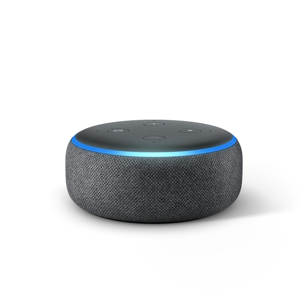
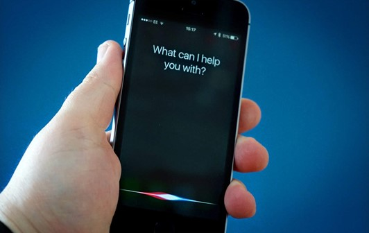

Meu nome é Luana Silvério, tenho 18 anos, moro na zona leste de São Paulo e trabalho como auxiliar administrativa em uma empresa de contabilidade em Santo André. Desde criança eu sempre quis ser professora e a partir do 2º ano eu decidi que entraria na UFABC. Pretendo ser professora de matemática, mas química também me agrada muito e por isso é minha 2º opção.
Este ano me inscrevi no PIBID (Programa Institucional de Bolsas de Iniciação à Docência) e estou no subprojeto de matemática, com o professor coordenador Vinícius Pazuch. Além disso, no meu tempo livre eu gosto de ver séries e filmes de todos os tipos, mas principalmente de super-heróis e com exceção dos de gênero terror. Alguns exemplos das minhas séries favoritas:
Arrow: Flash: How I Met Your Mother: Peaky Blinders
Peaky Blinders
 O Alienista:
O Alienista:

Alguns exemplos dos meus filmes favoritos:
O Físico: Diário de uma paixão:
Diário de uma paixão:
 A bela e a fera:
A bela e a fera:
 Aula 7 - Resumo:
Aula 7 - Resumo:
O desenvolvimento contemporâneo das mídias interativas é um fator fundamental na renovação do pensamento no domínio da comunicação educacional para a reorganização do espaço tradicional. Esse enquadramento valoriza os processos de interação no desenvolvimento com as mídias e a dinâmica interacional que permite um novo modo de pensar.
As mídias de conhecimento estabelecem um novo modelo de desenvolvimento nas relações entre as pessoas e o conhecimento, na medida em que são dinâmicas e adaptativas, ou seja, promovem a auto regulação da aprendizagem em um ambiente favorável ao seu desenvolvimento. Como referem Bonk e Reynolds (1997) o ensino centrado no aluno encorajou os educadores a criarem um ambiente inovador que ajudam os alunos a ligarem a nova informação à anterior, procurar informações relevantes e pensar acerca do seu próprio pensamento, criando a necessidade de se proceder ao desenvolvimento do projeto educacional, integralizando o aluno, as mídias e a produção da aprendizagem.
O hipertexto, criado nos anos 60 por Ted Nelson, compreende um sistema não linear da organização da informação, formado por nós e arcos, constituindo um sistema de representação e armazenamento de informações. No plano da aprendizagem o hipertexto promove o desenvolvimento da representação multidimensional, flexível, além da ligação entre diferentes tipos de informação (texto, imagem e som). Dessa forma, o aluno dispõe de um sistema que o ajuda a pensar, a decidir e a construir novos cenários de representação do saber, através da reconfiguração dinâmica das relações entre os conteúdos. A lógica de procura e pesquisa caracteriza a interação das mídias de conhecimento e o hipertexto, desenvolvendo-se de acordo com as necessidades individuais. A integração destas dimensões contribui para a concepção da aprendizagem como um projeto, no âmbito dos novos ambientes de aprendizagem.
A flexibilidade hipertexto constitui na capacidade de desenvolver múltiplas ligações entre os conteúdos, e múltiplos níveis de representação. Nesse sentido, a flexibilidade hipertexto é um suporte para a promoção do desenvolvimento cognitivo na organização e transferência do conhecimento. O acesso aos conteúdos num hipertexto ideal é livre, interativo e não sequencial entre o conteúdo e o utilizador. Essa liberdade de navegação e os múltiplos formatos de apresentação pode conduzir à sobrecarga cognitiva e ao surgimento de problemas de navegação, sendo responsável por uma área crítica no desenvolvimento dos hipertextos educacionais, designado por desorientação (Conklin, 1987) e pelo fenômeno de perdido no hiperespaço (Edwards e Hardman, 1989). Dessa forma a flexibilidade hipertexto constitui um meio para o desenvolvimento da multidimensionalidade da representação, por outro, poderá envolver o aluno num processo de desorientação dentro dessa mesma multidimensionalidade. Assim, a criação e implementação de ambientes de aprendizagem hipertexto e mecanismo de ajuda à navegação procuram diminuir os efeitos de sobrecarga cognitiva e dos fenômenos de desorientação no decurso das aprendizagens.
A World Wide Web é o lugar para o desenvolvimento dos hipertextos comunitários através das interações com o conhecimento distribuído na rede, essa aprendizagem é influenciada pela natureza virtual das interações sociais. Ela foi criada em 1989 por Tim Berners-Lee, R. Cailliou, J.F. Groff e B. Pollermann no CERN é descrita do seguinte modo:
"A Web foi desenvolvida para ser um repositório do conhecimento humano, permitindo a partilha de ideias e de todo o aspecto de um projeto comum aos colaboradores em sítios remotos" (Berners-Lee et al., 1994: 76)
Assim, as comunidades de aprendizagem na Web são espaços de simulação e construção de conhecimento através da criação de vínculos sociais influenciando a construção de uma inteligência coletiva que se expande do lugar físico para o virtual.
Aula 10 - Atividade em grupo:
Camila da Silva Lourenço Finco, João Paulo Mantovan, Larissa Gabriela Rodrigues de Oliveira e Luana Silverio Moreira.
O jogo tem por objetivo construir estruturas com vários "Goo", que são seres surreais, fofos e que possuem o corpo em formato esférico, possibilitando que haja distintas maneiras de arranjo que não só desafiam a imaginação do jogador, mas também exigem certo equilíbrio - envolvendo as leis da física - para que a construção não desabe, permitindo que os Goos alcancem o tubo de escape para serem sugados, finalizando o estágio. Ao decorrer do jogo vão surgindo diferentes tipos de goos que apresentam características que influenciam positiva ou negativamente na estrutura, além de cada fase exigir número mínimo de Goos para serem sugados pelo tubo. World of Goo tem como data de lançamento o ano de 2008, recebendo notório destaque não só na categoria arte abstrata, mas também puzzle. Analisando seus aspectos é perceptível, imediatamente, o porquê. Nos gráficos se fazem presentes elementos relativamente simples, todavia que não deixam de tornar o espaço agradável e o jogo mais leve, possibilitando que seja executado em equipamentos de distintas potências. Além disso, mais um ponto positivo seria a ausência de poluição visual, ou seja, excesso de elementos desnecessários que atrapalham a visualização. O conjunto de elementos compõem uma atmosfera que envolve ao mesmo tempo que impressiona o jogador, a arte bem executada e calculada com conceitos de engenharia - em que figuras devem ser ligadas formando estruturas com certo equilíbrio - encaixa-se perfeitamente ao tipo, os gráficos não são assaz coloridos, entretanto suas cores interferem de modo positivo, conversam-se com tal harmonia proporcionando ambientes mais calmos em consonância com a trilha sonora perfeita fazendo o jogador conectar-se, ocasionando maior desempenho e auxiliando na jogabilidade, o que é perfeito para um jogo de puzzle. Dá ênfase na arte abstrata ao introduzir elementos fofos e surreais que escapam da realidade, das representações do mundo ao redor. Já se é esperado para a categoria/gráfico que não consiga imergir o jogador para as dimensões do jogo, principalmente por possuir gráfico simples não muito detalhado e ser predominantemente em arte abstrata juntamente como dito anteriormente não ser esse o objetivo do jogo. Mas isso não impede que consiga não apenas impressionar como também envolver o jogador para que tal passe horas jogando sem que perceba. Por isso o conjunto da obra foi merecedor de diversos prêmios.
O design artístico é uma característica importante nos diversos games. São marcados pelos aspectos artísticos do jogo usando diferentes softwares de criação de arte digital, como os de modelagem 3D, ilustração, desenhos e pinturas. Além das ilustrações de acordo com as especificações do jogo, há muito mais criatividade envolvida, pois, a forma como um cenário, nível ou personagem em particular é descrito, pode ter uma grande influência na própria jogabilidade. Além de esbanjar em criatividade, o jogo World of Goo traz aspectos da arte abstrata ao priorizar formas geométricas, principalmente as circulares representadas pelos Goos - personagens do jogo. O jogo ganhou tanto destaque no quesito arte, criatividade e design que, em 2008 ganhou o prêmio de Melhor Design Artístico.
Jogos de puzzle são uma categoria de jogos onde o jogador deve, por meio de artifícios do próprio cenário, desvendar mistérios ou solucionar desafios. Em World of Goo, o jogador é encarregado de montar estruturas com os próprios Goos, para poder concluir o nível, o que tornou esse jogo tão popular e merecedor do prêmio de melhor jogo de puzzle de 2008 foi o arranjo dos desafios, que são como torres “orgânicas” no qual o jogador pode realizar a tarefa de diversos meios possíveis, como um quebra cabeça em constante movimento. Tudo isso, alinhado ao fato de que o jogo possui algumas mecânicas que simulam a física de objetos, como por exemplo, o vento que, conforme a torre de Goos é montada, induz a torre a balançar de um lado para o outro, o que nos leva a segunda mecânica, que é o peso, no qual quanto mais Goos forem colocados, mais a estrutura vai pesar. Essas mecânicas vão se tornando um obstáculo cada vez mais complicado, já que elas fazem com que o jogador precise de um planejamento desde a base para que a construção não colapse, o que torna o desafio ainda mais complexo e desafiador.
Jogos independentes são aqueles que foram desenvolvidos por um grupo pequeno de pessoas e que não houve um patrocínio ou ajuda financeira para serem feitos ou lançados. Por esse motivo, geralmente, sua distribuição é feita via internet, isso faz com que não haja grandes propagandas ou anúncios. Por ser algo não vinculado a grandes publicadoras, seus desenvolvedores têm liberdade em sua confecção, assim não tendo limitações criativas. No ano de 2008 o jogo World of Goo ganhou a premiação de melhor jogo independente na Spike Video Game Awards, uma premiação apresentada pelo canal Spike que divulgava os melhores jogos de consoles e de computador. Esse jogo foi desenvolvido por ex-funcionários da Eletronic Arts.

O uso do GPS está ao alcance dos diversos campos da atividade humana. O GPS é útil em praticamente todas as situações e profissões em que seja necessário obter uma localização precisa dos envolvidos, como trabalhos de exploração, expedições dentro de matas ou cavernas, além de ser importante para praticamente todos os veículos de voo ou navegação, permitindo aos tripulantes saberem exatamente onde se encontram, no céu ou no mar.

O reconhecimento facial é baseado em uma técnica biométrica em que os softwares “codificam” nosso rosto. A extração de cada ponto vai formando a assinatura facial e é armazenada em um banco de dados. Ao fim do processo, é necessário comparar as características extraídas com as do banco para encontrar o dono do rosto. Alguns smartphones já utilizam a tecnologia para que o aparelho seja desbloqueado somente pelo proprietário.
Além dos celulares e aplicativos como o Facebook que identifica seu rosto nas fotos, o reconhecimento facial passa a ganhar importância na publicidade e no marketing. Recentemente, a concessionária ViaQuatro, que administra a linha 4 do metrô de São Paulo, instalou portas interativas que exibem anúncios e monitoram a reação das pessoas aos anúncios mostrados nas portas. Os sensores podem mensurar o número de espectadores e contabilizá-los por idade e/ou sexo. Além disso, pode classificar seus comportamentos em quatro tipos: feliz, insatisfeito, surpreso ou neutro.

Assim como suas concorrentes a Alexa é uma assistente conversacional, capaz de entender contexto até certo ponto e executar tarefas simples, como configurar alarmes, informar a situação do trânsito ou a previsão do tempo, executar uma lista de músicas ou reproduzir podcasts.
A Alexa pode interagir com dispositivos tais como geladeiras, lâmpadas inteligentes, microondas, fechaduras, termostatos, controles remotos, TVs, sensores de movimento, interruptores e etc. Tanto por comandos de voz ditos pelos usuários quanto por interação com os aplicativos dedicados à automação de tarefas, como o IFTTT.
A Alexa também é capaz de fazer pedidos de compras: caso o usuário mantenha dados financeiros em sua conta, ele pode usar comandos de voz e pedir que a assistente compre produtos cotidianos. Em 2017, ela passou a aceitar pedidos de comida em redes como Starbucks, Domino’s Pizza e Pizza Hut, entre outras.


Aula 11 - Resenha:O filme foi lançado em 2014 e é dirigido por Morten Tyldum e tem como atores principais Benedict Cumberbatch e Keira Knightley. “O jogo da imitação” é um filme biográfico que conta a história de Alan Turing, um matemático, cientista, e criador da Máquina de Turing, cuja invenção servia para decodificação de mensagens criptografadas. Estima-se que a invenção da redução de pelo menos 02 anos a duração da guerra e, consequentemente, redução de mortes.
filme escrito e dirigido pelo escritor britânico Alex Garland, “Ex Machina” conta a história de Caleb, um programador que trabalha para a Bluebook. Ele ganha uma competição para passar uma semana na casa do CEO da empresa. O filme se desenvolve a partir do momento em que Caleb descobre que passará uma semana com um robô para avaliar o quão “humano” ele pode ser.
Aula 11 - Música em grup vol. 1:João Paulo Mantovan, Larissa Gabriela Rodrigues de Oliveira e Luana Silverio Moreira.

João Paulo Mantovan, Larissa Gabriela Rodrigues de Oliveira e Luana Silverio Moreira.